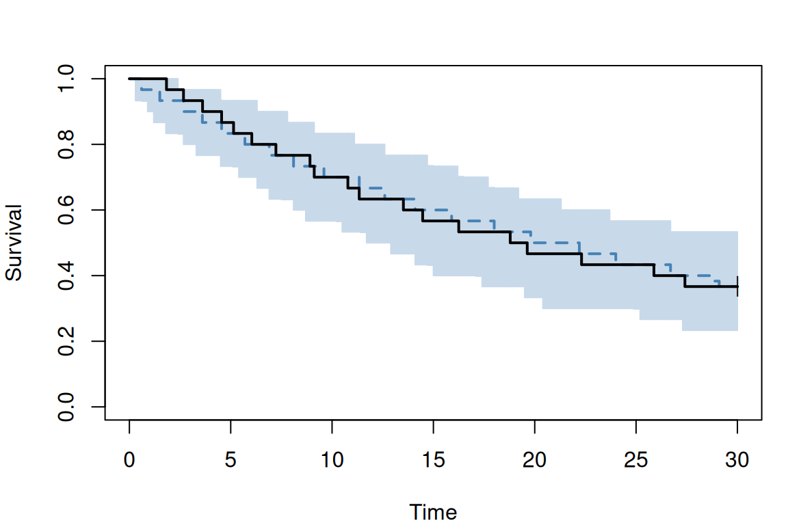

Example: Kaplan-Meier VPC for a time-to-event model
ferx_vpc_tte() is the visual predictive check for a single-event time-to-event (TTE) endpoint. It simulates the observed design n_sim times, censors each replicate like the data, and returns the observed Kaplan-Meier curve beside the pointwise band of the replicate curves. The curve and the band are computed in the engine; the function never refits.
Tip
For the full walkthrough (dropouts, stratification, competing risks), see the Kaplan-Meier VPC section of Chapter 22 (Time-to-event models) in the FeRx book. All arguments are in the ferx_vpc_tte() reference.
Model and data
tte_exponential has a constant hazard with between-subject variability, one record per subject: DV = 1 for an event, DV = 0 for censoring at the end of follow-up (30 h).
# [event_model]
cmt = 2
family = exponential
# Note: [event_model] expressions are evaluated in the theta/eta/covariate
# namespace — not in the [individual_parameters] namespace. Write the full
# theta/eta expression here rather than referencing LAMBDA directly.
scale = TVLAMBDA * exp(ETA_LAMBDA)
dat <-read.csv(ex$data, na.strings =".")table(DV = dat$DV)
DV
0 1
11 19
Fit and check
fit <-ferx_fit(ex$model, ex$data, verbose =FALSE)vpc <-ferx_vpc_tte(ex$model, ex$data, n_sim =200, seed =1, fit = fit)
Warning: ferx_vpc_tte produced 1 diagnostic:
[individual_parameters] `LAMBDA` is computed but never used — not mapped into the `pk(...)` model and not referenced in any other block, so it has no effect. Map it in [structural_model] (e.g. `f=F`) or remove it.
vpc
Kaplan-Meier VPC (ferx_vpc_tte)
endpoint cmt 2, horizon 30, 200 replicates, observed censoring
band 5%-95% with the 50% line
all: 30 subjects, 19 events
1 warning (see `$warnings`)
The warning is the simulator’s diagnostic that this example computes LAMBDA in [individual_parameters] without using it; the [event_model] writes the hazard out itself.
vpc$observed is the observed Kaplan-Meier curve (it matches survival::survfit() row for row); vpc$band holds the replicate band at each grid time: lo, med and hi at probs (5%, 50%, 95% by default) and n_used, the replicates still under follow-up there.
head(vpc$band)
STRATUM time obs lo med hi n_used
1 all 0.0 1 1.0000000 1.0000000 1 200
2 all 0.3 1 0.9333333 1.0000000 1 200
3 all 0.6 1 0.9316667 0.9666667 1 200
4 all 0.9 1 0.9000000 0.9666667 1 200
5 all 1.2 1 0.8666667 0.9666667 1 200
6 all 1.5 1 0.8666667 0.9333333 1 200
plot() uses the vpc package’s plot_vpc() when it is installed and base graphics otherwise; engine = "base" forces base graphics.
plot(vpc, engine ="base")

Censoring
With the default censoring = "observed", a subject censored in the data keeps its censoring time in every replicate, and a subject with an event draws a later censoring time from the censorings observed in its own stratum, so the band is comparable with the observed curve. censoring = "horizon" censors replicates at the horizon only, which gives too narrow a band when subjects drop out early. In tte_exponential all censoring is at the horizon, so here the two are the same (the LAMBDA warning is hidden from here on):
strata names a covariate (at most 10 distinct values); by_dose = TRUE groups subjects by their first dose instead. ferx_vpc_tte() also accepts a data frame:
A model with several TTE endpoints needs cmt; without it the call is refused with a ferx_engine_error whose code is E_VPC_TTE_INPUT. With cmt, the curve is that cause’s survival with the other causes as censoring. As in the sections above, the replicates are simulated at the fitted parameters: